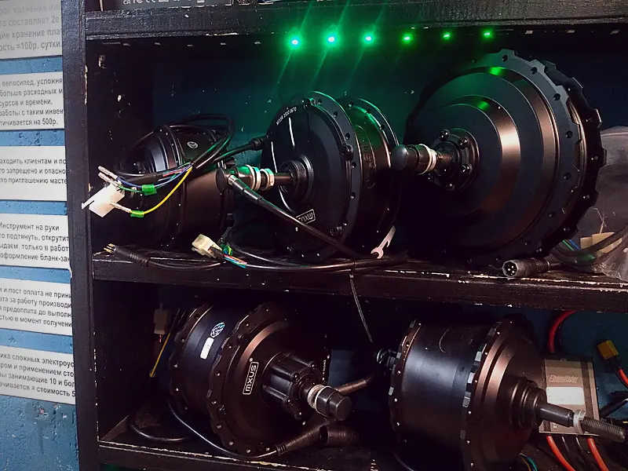

С 2012 года
Мастерская CITY BIKE
Мастер Евгений катает фристайл и знает байки изнутри. Мы занимаемся ремонтом и обслуживанием всех типов велосипедов и развиваем направление электровелосипедов.
Команда под любую задачу
Сити Байк основан в 2012 году. В команде собраны мастера-механики, инженеры, электронщики, маляры и токари.
Всё для того, чтобы решить любой вопрос, который может возникнуть и у любителя покататься по выходным, и у профессионального райдера.




Приезжайте в мастерскую
Новосибирск, Вокзальная магистраль, 3, цоколь, въезд со двора. Ежедневно с 11:00 до 20:00, кроме воскресенья.